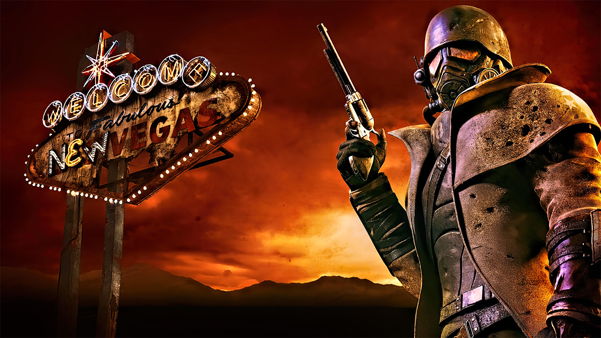

FALLOUT : New Vegas
Ma Note

Mon Avis
Que dire ?
À part que c’est un chef-d’œuvre d’écriture.
Il y a tellement de possibilités dans ce jeu ! On a pris FALLOUT 3, on y a ajouté des factions, chacune défendant ses propres intérêts, avec nous au milieu.
Les choix sont nombreux, les fins multiples, la rejouabilité énorme.
Petit bémol pour quelques bugs agaçants et des crashs (le jeu est très vieux, il date de 2010).
Mais certaines mécaniques restent meilleures que dans beaucoup de jeux sortis de nos jours…
JOUEZ-Y ! Et rejoignez la secte de FALLOUT !